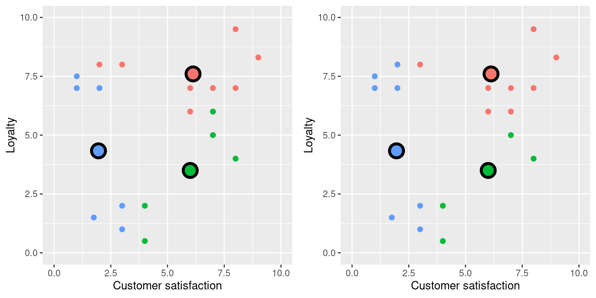
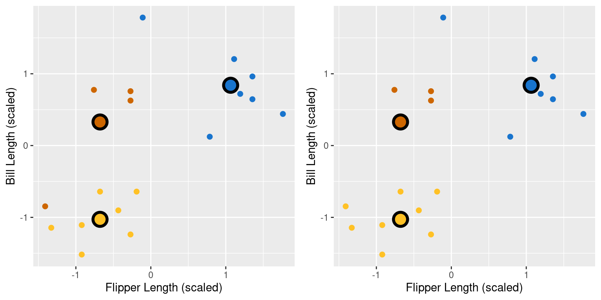
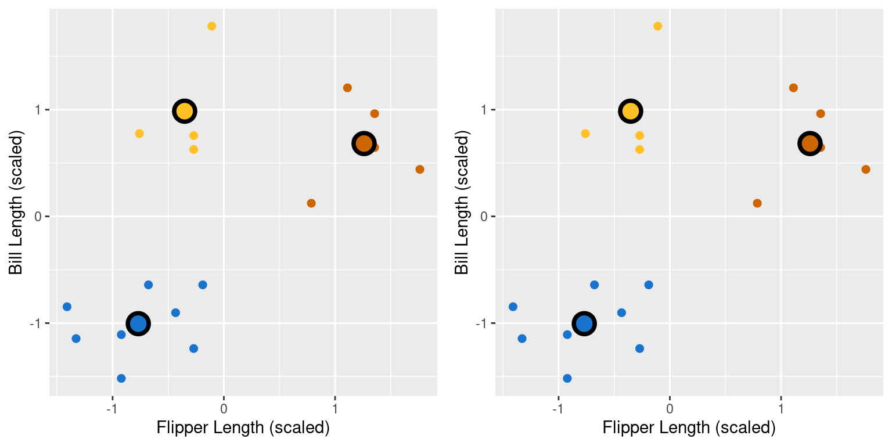
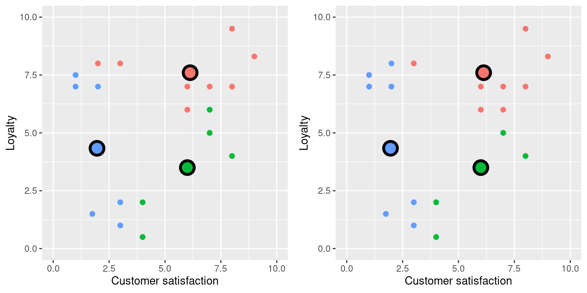
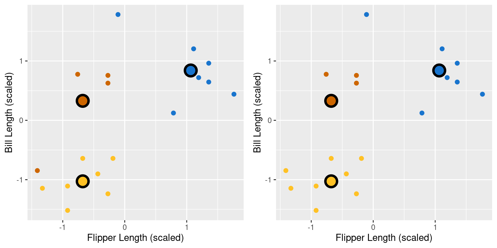
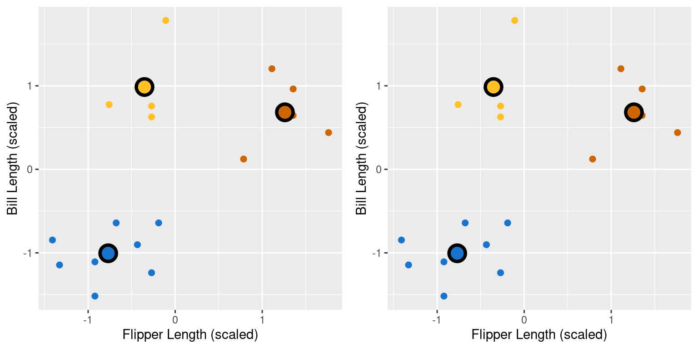
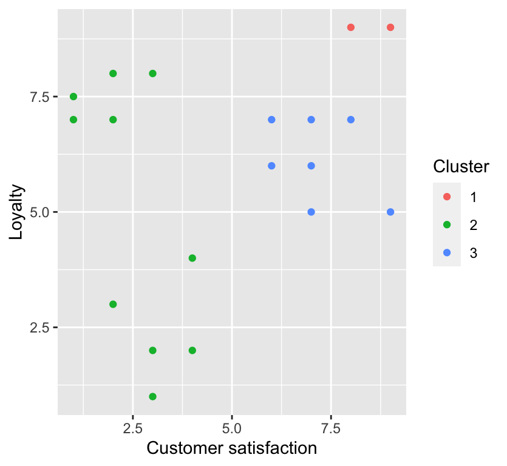
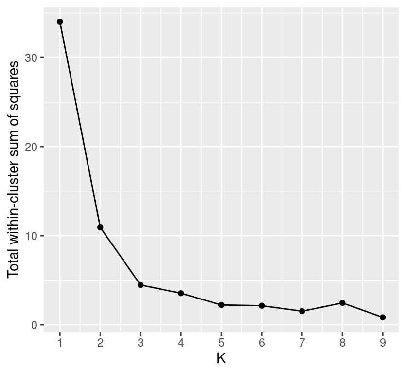
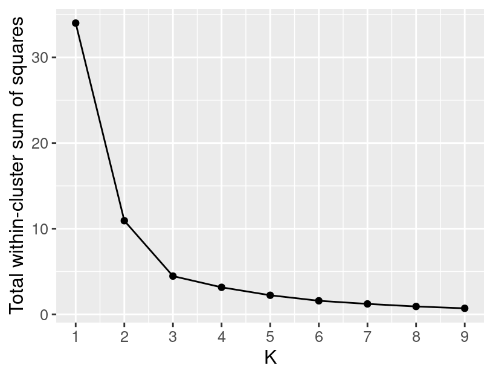

Chapter 10 Clustering
10.1 Overview
As part of exploratory data analysis, it is often helpful to see if there are meaningful subgroups (or clusters) in the data; this grouping can be used for many purposes, such as generating new questions or improving predictive analyses. This chapter provides an introduction to clustering using the K-means algorithm, including techniques to choose the number of clusters.
10.2 Chapter learning objectives
By the end of the chapter, students will be able to:
- Describe a case where clustering is appropriate, and what insight it might extract from the data.
- Explain the K-means clustering algorithm.
- Interpret the output of a K-means analysis.
- Identify when it is necessary to scale variables before clustering, and do this using R.
- Perform K-means clustering in R using
kmeans. - Use the elbow method to choose the number of clusters for K-means.
- Visualize the output of K-means clustering in R using coloured scatter plots.
- Describe the advantages, limitations and assumptions of the K-means clustering algorithm.
10.3 Clustering
Clustering is a data analysis task involving separating a data set into subgroups of related data. For example, we might use clustering to separate a data set of documents into groups that correspond to topics, a data set of human genetic information into groups that correspond to ancestral subpopulations, or a data set of online customers into groups that correspond to purchasing behaviours. Once the data are separated, we can, for example, use the subgroups to generate new questions about the data and follow up with a predictive modelling exercise. In this course, clustering will be used only for exploratory analysis, i.e., uncovering patterns in the data.
Note that clustering is a fundamentally different kind of task than classification or regression. In particular, both classification and regression are supervised tasks where there is a predictive target (a class label or value), and we have examples of past data with labels/values that help us predict those of future data. By contrast, clustering is an unsupervised task, as we are trying to understand and examine the structure of data without any labels to help us. This approach has both advantages and disadvantages. Clustering requires no additional annotation or input on the data. For example, it would be nearly impossible to annotate all the articles on Wikipedia with human-made topic labels. However, we can still cluster the articles without this information to find groupings corresponding to topics automatically.
However, because there is no predictive target, it is not as easy to evaluate the “quality” of a clustering. With classification, we can use a test data set to assess prediction performance. In clustering, there is not a single good choice for evaluation. In this book, we will use visualization to ascertain the quality of a clustering, and leave rigorous evaluation for more advanced courses.
There are also so-called semisupervised tasks, where only some of the data come with labels/annotations, but the vast majority don’t. The goal is to try to uncover underlying structure in the data that allows one to guess the missing labels. This sort of task is beneficial, for example, when one has an unlabelled data set that is too large to manually label, but one is willing to provide a few informative example labels as a “seed” to guess the labels for all the data.
An illustrative example
Here we will present an illustrative example using a data set from the {palmerpenguins} R data package. This data set was collected by Dr. Kristen Gorman and the Palmer Station, Antarctica LTER and includes measurements for adult penguins near Palmer Station (Horst, Hill, and Gorman 2020). We have modified the data set for use in this chapter. Here we will focus on using two variables—penguin bill and flipper length, both in mm—to determine whether there are distinct types of penguins in our data. Understanding this might help us with species discovery and classification in a data-driven way.![Gentoo penguin. [@penguinsimage]](https://upload.wikimedia.org/wikipedia/commons/0/00/Brown_Bluff-2016-Tabarin_Peninsula%E2%80%93Gentoo_penguin_%28Pygoscelis_papua%29_03.jpg)
Figure 10.1: Gentoo penguin. (Andrew Shiva 2016)
Below we will work with penguin_data, a subset of 18 observations of the original data, which has already been scaled. We will discuss scaling for K-means in more detail later in this chapter.
## # A tibble: 18 x 2
## flipper_length_scaled[,1] bill_length_scaled[,1]
## <dbl> <dbl>
## 1 -0.190 -0.641
## 2 -1.33 -1.14
## 3 -0.922 -1.52
## 4 -0.922 -1.11
## 5 -1.41 -0.847
## 6 -0.678 -0.641
## 7 -0.271 -1.24
## 8 -0.434 -0.902
## 9 1.19 0.720
## 10 1.36 0.646
## 11 1.36 0.963
## 12 1.76 0.440
## 13 1.11 1.21
## 14 0.786 0.123
## 15 -0.271 0.627
## 16 -0.271 0.757
## 17 -0.108 1.78
## 18 -0.759 0.776Figure 10.2: Subset data of penguin scaled bill length versus flipper length.
Based on the visualization in Figure 10.2, we might suspect there are a few subtypes of penguins, selected from combinations of high/low flipper length and high/low bill length. How do we find this grouping automatically, and how do we pick the number of subtypes? The way to rigorously separate the data into groups is to use a clustering algorithm. In this chapter, we will focus on the K-means algorithm, a widely-used and often very effective clustering method, combined with the elbow method for selecting the number of clusters. This procedure will separate the data into the following groups denoted by colour:
Figure 10.3: Subset data of penguin scaled bill length versus flipper length with coloured groups
What are the labels for these groups? Unfortunately, we don’t have any. K-means, like almost all clustering algorithms, just outputs meaningless “cluster labels” that are typically whole numbers: 1, 2, 3, etc. But in a simple case like this, where we can easily visualize the clusters on a scatter plot, we can give human-made labels to the groups using their positions on the plot:
- small flipper length and small bill length (orange cluster),
- small flipper length and large bill length (blue cluster).
- and large flipper length and large bill length (yellow cluster).
Once we have made these determinations, we can use them to inform our species classifications or ask further questions about our data. For example, we might be interested in understanding the relationship between flipper length and bill length, and that relationship may differ depending on the type of penguin we have.
10.4 K-means
10.4.1 Measuring cluster quality
The K-means algorithm is a procedure that groups data into K clusters. It starts with an initial clustering of the data, and then iteratively improves it by making adjustments to the assignment of data to clusters until it cannot improve any further. But how do we measure the “quality” of a clustering, and what does it mean to improve it? In K-means clustering, we measure the quality of a cluster by its within-cluster sum-of-squared-distances (WSSD). Computing this involves two steps. First, we find the cluster centers by computing the mean of each variable over data points in the cluster. For example, suppose we have a cluster containing four observations, and we are using two variables, \(x\) and \(y\), to cluster the data. Then we would compute the \(x\) and \(y\) variables, \(\mu_x\) and \(\mu_y\), of the cluster center via
\[\mu_x = \frac{1}{4}(x_1+x_2+x_3+x_4) \quad \mu_y = \frac{1}{4}(y_1+y_2+y_3+y_4).\]
In the first cluster from the example, there are 4 data points. These are shown with their cluster center
(flipper_length_scaled = -0.35 and bill_length_scaled = 0.99) highlighted
in Figure 10.4.
Figure 10.4: Cluster 1 from the toy example, with center highlighted.
The second step in computing the WSSD is to add up the squared distance between each point in the cluster and the cluster center. We use the straight-line / Euclidean distance formula that we learned about in the classification chapter. In the 4-observation cluster example above, we would compute the WSSD \(S^2\) via
\[\begin{align*} S^2 = \left((x_1 - \mu_x)^2 + (y_1 - \mu_y)^2\right) + \left((x_2 - \mu_x)^2 + (y_2 - \mu_y)^2\right) + \\ \left((x_3 - \mu_x)^2 + (y_3 - \mu_y)^2\right) + \left((x_4 - \mu_x)^2 + (y_4 - \mu_y)^2\right). \end{align*}\]
These distances are denoted by lines in Figure 10.5 for the first cluster of the penguin data example.
Figure 10.5: Cluster 1 from the toy example, with distances to the center highlighted.
The larger the value of \(S^2\), the more spread-out the cluster is, since large \(S^2\) means that points are far from the cluster center. Note, however, that “large” is relative to both the scale of the variables for clustering and the number of points in the cluster. A cluster where points are very close to the center might still have a large \(S^2\) if there are many data points in the cluster.
10.4.2 The clustering algorithm
We begin the K-means algorithm by picking K, and uniformly randomly assigning data to the K clusters. Then K-means consists of two major steps that attempt to minimize the sum of WSSDs over all the clusters, i.e. the total WSSD:
- Center update: Compute the center of each cluster.
- Label update: Reassign each data point to the cluster with the nearest center.
Figure 10.6: Random initialization of labels.
 

Note that at this point, we can terminate the algorithm since none of the assignments changed in the fourth iteration; both the centers and labels will remain the same from this point onward.
Is K-means guaranteed to stop at some point, or could it iterate forever? As it turns out, thankfully, the answer is that K-means is guaranteed to stop after some number of iterations. For the interested reader, the logic for this has three steps: (1) both the label update and the center update decrease total WSSD in each iteration, (2) the total WSSD is always greater than or equal to 0, and (3) there are only a finite number of possible ways to assign the data to clusters. So at some point, the total WSSD must stop decreasing, which means none of the assignments are changing, and the algorithm terminates.
10.4.3 Random restarts
Unlike the classification and regression models we studied in previous chapters, K-means can get “stuck” in a bad solution. For example, if we were unlucky and initialized K-means with the following labels:Figure 10.7: Random initialization of labels.
This looks like a relatively bad clustering of the data, but K-means cannot improve it. To solve this problem when clustering data using K-means, we should randomly re-initialize the labels a few times, run K-means for each initialization, and pick the clustering that has the lowest final total WSSD.
10.4.4 Choosing K
In order to cluster data using K-means, we also have to pick the number of clusters, K. But unlike in classification, we have no data labels and cannot perform cross-validation with some measure of model prediction error. Further, if K is chosen too small, then multiple clusters get grouped together; if K is too large, then clusters get subdivided. In both cases, we will potentially miss interesting structure in the data. For example, take a look below at the K-means clustering of our penguin flipper and bill length data for a number of clusters ranging from 1 to 9.
Figure 10.8: Clustering of the penguin data for # clusters ranging from 1 to 9.
Figure 10.9: Total WSSD for # clusters ranging from 1 to 9.
10.5 Data pre-processing for K-means
Similar to K-nearest neighbours classification and regression, K-means
clustering uses straight-line distance to decide which points are similar to
each other. Therefore, the scale of each of the variables in the data
will influence which cluster data points end up being assigned.
Variables with a large scale will have a much larger
effect on deciding cluster assignment than variables with a small scale.
To address this problem, we typically standardize our data before clustering,
which ensures that each variable has a mean of 0 and standard deviation of 1.
The scale function in R can be used to do this.
We show an example of how to use this function
below using an unscaled version of data set in this chapter:
## # A tibble: 18 x 2
## bill_length_mm flipper_length_mm
## <dbl> <dbl>
## 1 39.2 196
## 2 36.5 182
## 3 34.5 187
## 4 36.7 187
## 5 38.1 181
## 6 39.2 190
## 7 36 195
## 8 37.8 193
## 9 46.5 213
## 10 46.1 215
## 11 47.8 215
## 12 45 220
## 13 49.1 212
## 14 43.3 208
## 15 46 195
## 16 46.7 195
## 17 52.2 197
## 18 46.8 189## # A tibble: 18 x 2
## bill_length_mm[,1] flipper_length_mm[,1]
## <dbl> <dbl>
## 1 -0.641 -0.190
## 2 -1.14 -1.33
## 3 -1.52 -0.922
## 4 -1.11 -0.922
## 5 -0.847 -1.41
## 6 -0.641 -0.678
## 7 -1.24 -0.271
## 8 -0.902 -0.434
## 9 0.720 1.19
## 10 0.646 1.36
## 11 0.963 1.36
## 12 0.440 1.76
## 13 1.21 1.11
## 14 0.123 0.786
## 15 0.627 -0.271
## 16 0.757 -0.271
## 17 1.78 -0.108
## 18 0.776 -0.75910.6 K-means in R
To perform K-means clustering in R, we use the kmeans function. It takes at
least two arguments: the data frame containing the data you wish to cluster,
and K, the number of clusters (here we choose K = 3). Note that since the K-means
algorithm uses a random initialization of assignments, we need to set the random
seed to make the clustering reproducible.
## K-means clustering with 3 clusters of sizes 4, 8, 6
##
## Cluster means:
## bill_length_mm flipper_length_mm
## 1 0.9858721 -0.3524358
## 2 -1.0050404 -0.7692589
## 3 0.6828058 1.2606357
##
## Clustering vector:
## [1] 2 2 2 2 2 2 2 2 3 3 3 3 3 3 1 1 1 1
##
## Within cluster sum of squares by cluster:
## [1] 1.098928 2.121932 1.247042
## (between_SS / total_SS = 86.9 %)
##
## Available components:
##
## [1] "cluster" "centers" "totss" "withinss" "tot.withinss"
## [6] "betweenss" "size" "iter" "ifault"As you can see above, the clustering object returned by kmeans has a lot of information
that can be used to visualize the clusters, pick K, and evaluate the total WSSD.
To obtain this information in a tidy format, we will call in help
from the broom package. Let’s start by visualizing the clustering
as a coloured scatter plot. To do that
we use the augment function, which takes in the model and the original data
frame, and returns a data frame with the data and the cluster assignments for
each point:
## # A tibble: 18 x 3
## bill_length_mm[,1] flipper_length_mm[,1] .cluster
## <dbl> <dbl> <fct>
## 1 -0.641 -0.190 2
## 2 -1.14 -1.33 2
## 3 -1.52 -0.922 2
## 4 -1.11 -0.922 2
## 5 -0.847 -1.41 2
## 6 -0.641 -0.678 2
## 7 -1.24 -0.271 2
## 8 -0.902 -0.434 2
## 9 0.720 1.19 3
## 10 0.646 1.36 3
## 11 0.963 1.36 3
## 12 0.440 1.76 3
## 13 1.21 1.11 3
## 14 0.123 0.786 3
## 15 0.627 -0.271 1
## 16 0.757 -0.271 1
## 17 1.78 -0.108 1
## 18 0.776 -0.759 1Now that we have this information in a tidy data frame, we can make a visualization of the cluster assignments for each point:
cluster_plot <- ggplot(clustered_data,
aes(x = flipper_length_mm, y = bill_length_mm, colour = .cluster),
size = 2) +
geom_point() +
labs(x = "Flipper Length (scaled)", y = "Bill Length (scaled)", colour = "Cluster") +
scale_color_manual(values = c("dodgerblue3","darkorange3", "goldenrod1"))
cluster_plot
As mentioned above, we also need to select K by finding
where the “elbow” occurs in the plot of total WSSD versus the number of clusters.
We can obtain the total WSSD (tot.withinss) from our
clustering using broom’s glance function. For example:
## # A tibble: 1 x 4
## totss tot.withinss betweenss iter
## <dbl> <dbl> <dbl> <int>
## 1 34 4.47 29.5 1To calculate the total WSSD for a variety of Ks, we will
create a data frame with a column named k with rows containing
each value of K we want to run K-means with (here, 1 to 9).
## # A tibble: 9 x 1
## k
## <int>
## 1 1
## 2 2
## 3 3
## 4 4
## 5 5
## 6 6
## 7 7
## 8 8
## 9 9Then we use map to apply the kmeans function to each
K. However, we need to use map a little bit differently than we have
before. This is because we need to iterate over k, which is the second argument
to the kmeans function. In the past, we have used map only to iterate over values of the
first argument of a function. Since that is the default, we could simply
write map(data_frame, function_name). This won’t work here; we need to
provide our data frame as the first argument to the kmeans function.
The solution is to create something called an anonymous function.
An anonymous function is a function that has no name,
unlike other functions you’ve seen so far (kmeans, select, etc).
To do this we will write our map statement like this:
The anonymous function in the above call is function(k) kmeans(scaled_data, k).
This function takes a single argument (k) and evaluates kmeans(scaled_data, k).
Since k is the first (and only) argument to the function, we can use map just
like we did before! The rest of the call above does just that – it passes each row of
penguin_clust_ks to our anonymous function.
Below, we execute this map call inside of a mutate call on the
penguin_clust_ks data frame and get a list column that contains a K-means
clustering object for each value of K we had:
penguin_clust_ks <- tibble(k = 1:9) %>%
mutate(penguin_clusts = map(k, function(ks) kmeans(scaled_data, ks)))
penguin_clust_ks## # A tibble: 9 x 2
## k penguin_clusts
## <int> <list>
## 1 1 <kmeans>
## 2 2 <kmeans>
## 3 3 <kmeans>
## 4 4 <kmeans>
## 5 5 <kmeans>
## 6 6 <kmeans>
## 7 7 <kmeans>
## 8 8 <kmeans>
## 9 9 <kmeans>Next, we use map again to apply glance to each of the K-means
clustering objects to get the clustering statistics (including WSSD). The output
of glance is a data frame, and so we get another list column. This results in a
complex data frame with 3 columns, one for K, one for the
K-means clustering objects, and one for the clustering statistics:
penguin_clust_ks <- tibble(k = 1:9) %>%
mutate(
penguin_clusts = map(k, ~ kmeans(scaled_data, .x)),
glanced = map(penguin_clusts, glance)
)
penguin_clust_ks## # A tibble: 9 x 3
## k penguin_clusts glanced
## <int> <list> <list>
## 1 1 <kmeans> <tibble [1 × 4]>
## 2 2 <kmeans> <tibble [1 × 4]>
## 3 3 <kmeans> <tibble [1 × 4]>
## 4 4 <kmeans> <tibble [1 × 4]>
## 5 5 <kmeans> <tibble [1 × 4]>
## 6 6 <kmeans> <tibble [1 × 4]>
## 7 7 <kmeans> <tibble [1 × 4]>
## 8 8 <kmeans> <tibble [1 × 4]>
## 9 9 <kmeans> <tibble [1 × 4]>Finally we extract the total WSSD from the glanced column. Given that each
item in this column is a data frame, we will need to use the unnest function
to unpack the data frames into simpler column data types.
## # A tibble: 9 x 6
## k penguin_clusts totss tot.withinss betweenss iter
## <int> <list> <dbl> <dbl> <dbl> <int>
## 1 1 <kmeans> 34 34.0 7.11e-15 1
## 2 2 <kmeans> 34 10.9 2.31e+ 1 1
## 3 3 <kmeans> 34 4.47 2.95e+ 1 1
## 4 4 <kmeans> 34 3.54 3.05e+ 1 1
## 5 5 <kmeans> 34 2.23 3.18e+ 1 2
## 6 6 <kmeans> 34 2.15 3.19e+ 1 3
## 7 7 <kmeans> 34 1.53 3.25e+ 1 2
## 8 8 <kmeans> 34 2.46 3.15e+ 1 1
## 9 9 <kmeans> 34 0.843 3.32e+ 1 2Now that we have tot.withinss and k as columns in a data frame, we can make a line plot
and search for the “elbow” to find which value of K to use.
elbow_plot <- ggplot(clustering_statistics, aes(x = k, y = tot.withinss)) +
geom_point() +
geom_line() +
xlab("K") +
ylab("Total within-cluster sum of squares") +
scale_x_continuous(breaks = 1:9)
elbow_plot
It looks like 3 clusters is the right choice for this data.
But why is there a “bump” in the total WSSD plot here? Shouldn’t total WSSD always
decrease as we add more clusters? Technically yes, but remember: K-means can
get “stuck” in a bad solution. Unfortunately, for K = 8 we had an unlucky initialization
and found a bad clustering! We can help prevent finding a bad clustering by trying a
few different random initializations via the nstart argument (here we use 10 restarts).
penguin_clust_ks <- tibble(k = 1:9) %>%
mutate(
penguin_clusts = map(k, ~ kmeans(scaled_data, nstart = 10, .x)),
glanced = map(penguin_clusts, glance)
)
clustering_statistics <- penguin_clust_ks %>%
unnest(glanced)
elbow_plot <- ggplot(clustering_statistics, aes(x = k, y = tot.withinss)) +
geom_point() +
geom_line() +
xlab("K") +
ylab("Total within-cluster sum of squares") +
scale_x_continuous(breaks = 1:9)
elbow_plot
10.7 Additional resources
- Chapter 10 of An Introduction to Statistical Learning (2013) provides a great next stop in the process of learning about clustering and unsupervised learning in general. In the realm of clustering specifically, it provides a great companion introduction to K-means, but also covers hierarchical clustering for when you expect there to be subgroups, and then subgroups within subgroups, etc. in your data. In the realm of more general unsupervised learning, it covers principal components analysis (PCA), which is a very popular technique in scientific applications for reducing the number of predictors in a dataset.
References
Andrew Shiva. 2016. “Brown Bluff-2016-Tabarin Peninsula–Gentoo Penguin (Pygoscelis Papua).” https://upload.wikimedia.org/wikipedia/commons/0/00/Brown_Bluff-2016-Tabarin_Peninsula%E2%80%93Gentoo_penguin_%28Pygoscelis_papua%29_03.jpg.
Horst, Allison Marie, Alison Presmanes Hill, and Kristen B Gorman. 2020. palmerpenguins: Palmer Archipelago (Antarctica) Penguin Data. https://doi.org/10.5281/zenodo.3960218.
James, Gareth, Daniela Witten, Trevor Hastie, and Robert Tibshirani. 2013. An Introduction to Statistical Learning. \(1^\text{st}\) ed. Springer.